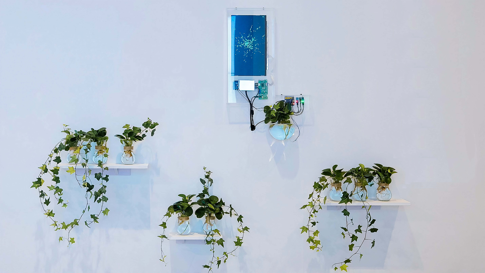

The Light Humor
of Plants
Data Visualisation Installation · 2022
An exploration of organic life in virtual digital environments, based on Roy Ascott's "moist media". Plants generate algorithmic life forms through their own bioelectric signals and surrounding environmental data — temperature, humidity, light, CO₂, and human touch.
MediumPlant + Arduino
SensorsCO₂ / Touch / Light